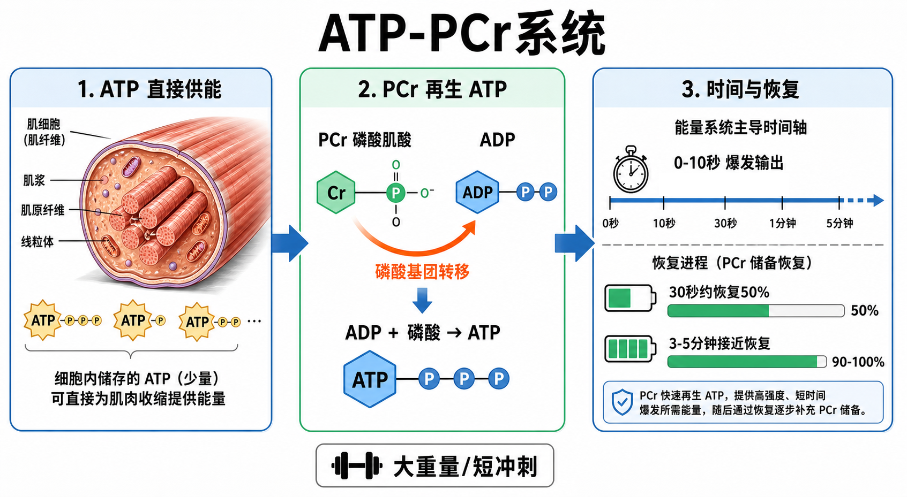

Day 22 · 能量系统-ATP-PCr系统
一句话总结
ATP-PCr 系统像肌肉里的应急充电宝: ATP 是能直接让肌肉收缩的现金，PCr 是旁边的备用零钱包。全力冲刺或单次大重量时，它能最快补 ATP，但储量很少，所以 0-10 秒最强，之后必须靠休息把 PCr 慢慢补回来。

核心要点
-
ATP-PCr: ATP 是直接供能物质，PCr 是快速再生 ATP 的备用仓库。
先抓结论: 肌肉不能直接“烧脂肪推杠铃”，最后都要把能量换成 ATP，ATP 再驱动横桥循环。底层机制
字面意思
ATP = 三磷酸腺苷，是细胞直接使用的能量货币。PCr = 磷酸肌酸，是带着高能磷酸的备用仓库。
大白话
ATP 像手机当前电量，PCr 像快充宝；电量掉了，PCr 立刻帮它补一格。
考试含义
题干出现“最大力量、爆发、短冲刺、0-10 秒”，优先联想 ATP-PCr，而不是乳酸或有氧。
肌肉收缩时 ATP 断开一个磷酸变成 ADP，释放能量给肌球蛋白横桥做功。PCr 把自己的磷酸快速转给 ADP，让 ADP 重新变回 ATP。
常见误解❌以为 ATP-PCr 是“燃烧蛋白质”。✅其实它主要是靠细胞里已经储存的 ATP 和磷酸肌酸快速周转，不需要氧气参与。
-
反应过程: PCr + ADP → 肌酸 + ATP，是最快的 ATP 再合成路径。
先抓结论: 它快，是因为反应步骤短、位置近，不用先把糖脂拆开再进复杂代谢链。
真实例子角色 做什么 训练类比 ADP ATP 用掉一个磷酸后的低能状态。 电池掉了一格。 PCr 把磷酸基团捐给 ADP。 充电宝立刻补电。 肌酸 PCr 捐出磷酸后留下的形式。 充电宝用掉了，需要休息再充。 1RM 深蹲起杠、起跑前 10 米加速、抓举拉起瞬间，都需要几乎立刻输出高功率。身体没时间等氧化系统慢慢供能。
训练含义想练最大力量和爆发力，重点不是把组练到酸，而是让每次输出都够快、够高质量，并给 PCr 足够恢复时间。
-
0-10秒: ATP-PCr 是无氧、即时、极短时系统，适合最高功率输出。
先抓结论: 它不是“能量很多”，而是“来得最快”。像火箭点火，猛烈但短。真实例子
无氧
不依赖氧气到场，所以启动最快。
即时
ATP 和 PCr 已在肌细胞内，反应路径短。
极短时
储量有限，持续全力输出很快下降。
单次最大卧推、3 次以内大重量硬拉、10 秒内冲刺、跳高起跳、投掷和举重爆发阶段，都高度依赖 ATP-PCr。
常见误解❌以为 100 米全程都只靠 ATP-PCr。✅其实起跑和前段高度依赖 ATP-PCr，后段会逐渐叠加糖酵解供能。
-
恢复速度: 30 秒约恢复 50%，3-5 分钟接近完全恢复。
先抓结论: 组间休息不是偷懒，是在给 PCr 重新充电。
底层机制休息时间 PCr状态 适合目标 30 秒左右 恢复约一半，仍没满。 代谢压力、训练密度、轻中负荷循环。 1-2 分钟 恢复更多，但最大输出仍可能打折。 一般增肌、技术练习、不过分追求峰值。 3-5 分钟 接近完全恢复。 大重量力量、爆发、速度质量。 PCr 恢复需要有氧过程帮忙把肌酸重新“充成”磷酸肌酸。所以它输出时无氧，但恢复时会受氧供和休息影响。
训练含义如果今天目标是 3RM 深蹲或跳跃速度，组间 30 秒很可能让下一组变成疲劳训练，不再是高质量力量训练。
-
运动适用: 最大力量、短冲刺、爆发动作越靠前段，ATP-PCr 占比越高。
先抓结论: 判断供能系统，先看强度和持续时间，再看是否能休息恢复。
常见误解运动情境 主供能判断 理由 1 次最大硬拉 ATP-PCr 时间极短，功率极高。 10 秒冲刺 ATP-PCr 为主 全力输出，尚未进入较长糖酵解主导。 400 米跑后段 糖酵解明显增加 时间更长，ATP-PCr 储量不够。 马拉松 氧化系统为主 持续时间长，强度相对低。 ❌以为一种运动只有一个系统工作。✅三大系统一直都在供能，只是主导比例随强度和时间变化。
-
休息策略: 大重量组间 3-5 分钟，是为了保留神经输出和 PCr 储备。
先抓结论: 如果目标是力量成绩，短休息会把训练从“练峰值输出”改成“练疲劳下坚持”。真实例子
最大力量
低次数、高负荷、长休息，让每组都有接近峰值的输出。
爆发速度
宁可少做，也要每次速度快；速度掉太多就停组。
增肌训练
可用中等休息追求训练量和张力，但不要误以为越喘越等于越增肌。
做 5 组 3 次深蹲，休 4 分钟往往比休 45 秒更能维持动作质量和重量。休得短可能更累，但重量、速度和技术都下降。
常见误解❌以为休息长就是训练不够狠。✅力量和爆发训练的“狠”，体现在每次输出质量高，而不是每组都喘到动作变形。
常见误区
❌很多人以为 ATP-PCr 和乳酸是一回事。✅其实 ATP-PCr 是短时快速再生 ATP，乳酸主要出现在糖酵解系统相关情境。
❌很多人以为短休更适合所有目标。✅最大力量和爆发训练常需要 3-5 分钟，让 PCr 和神经输出恢复。
❌很多人以为供能系统按开关切换。✅三大系统同时工作，只是 ATP-PCr 在极短高强度时占主导。
记忆口诀
ATP 是现金，PCr 是快充；十秒内爆发，休三五分钟；短冲大重量，先想磷酸肌酸系统。
翻转卡复习
实操关联
- 最大力量: 1-5 次大重量组间休 3-5 分钟，让 PCr 和神经输出恢复，避免重量越做越塌。
- 爆发训练: 跳跃、冲刺、投掷看速度质量；速度明显下降时，继续堆次数会偏离目标。
- 增肌训练: ATP-PCr 仍参与每次发力，但中高次数会更快叠加糖酵解压力。
- 减脂体能: 短休循环能提高训练密度，但那不等于更适合最大力量表现。
- 康复回归: 先用低疲劳、高质量短组练动作控制，再逐步增加速度和负荷。